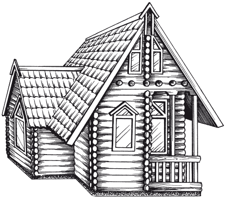

Виды загородных домов.

Загородные дома, как правило, возводят в благоустроенных поселках за чертой города. Такой дом предназначен для постоянного проживания семьи, которая мечтает соединить все блага городской жизни в экологически чистых районах, на собственном земельном участке, размеры которого могут варьировать от 600 м до 1 га и более. Таким образом, загородный дом – это не только комфортабельное жилое строение, но и благоустроенный земельный участок, на котором в зависимости от экономических возможностей и пристрастия всех членов семьи могут располагаться внутренний дворик, гараж, теплицы, домик для гостей, дополнительные хозяйственные постройки, зона отдыха с цветником, сад с огородом, детская площадка и др.
При возведении загородного дома следует помнить об одном правиле: использовать все средства дизайна и архитектурной выразительности в построении дома достаточно трудно, но пренебрежение ими означает обречь свое жилье на скучную безликость или ненужную пестроту. Внешний вид дома, его облик определяются гармонией и единством с природой, соподчиненностью архитектурной композиции с цветовым решением, светом и прочими дизайнерскими решениями.
Эстетическая оценка загородного дома в первую очередь определяется совершенством объемно-пространственной композиции возводимого здания, организацией всех поверхностей (стен, крыши, пола и др.), а также тем, насколько жилище вписывается в окружающую среду. Упорядоченная, ритмическая повторяемость объемов, плоскостей, проемов, соотношений деталей, цветовых и световых ощущений вызывает у любого человек (проживающего в доме, гостей или прохожих) эмоции и ответные чувства. Во многом они связаны с обитателями дома, их воспитанием, образованием, жизненным опытом. В то же время взгляды на дом и его дизайн могут меняться при коллективном проживании в нем или под влиянием общественного мнения.
Современные загородные строения возводятся в виде коттеджа и экодома, роскошного особняка или виллы.
ОсобнякОсобняк – комфортабельный и благоустроенный дом городского типа. Как правило, здание достаточно большое, 2-уровневое, предназначенное для одной семьи. Особняк возводят согласно индивидуальной планировке и персональному архитектурно-художественному решению. Площади всех помещений в особняке несколько превышают нормативные. На первом этаже обычно размещают холл, гостиную (общую комнату), кабинет (библиотеку), столовую, кухню, террасу, веранду, на втором этаже – спальни с несколькими санузлами, гардеробные, игровые и т. д. Если есть третий этаж, то обычно он представляет собой мансарду, в которой размещают комнаты для гостей или помещения, где можно заняться своим хобби. Для большего комфорта в современных особняках размещают зимние сады, солярии, помещения для отдыха, тренинга и игр. В подвальном (цокольном) этаже устраивают гараж на одну или несколько автомашин, кладовую, сауну, мастерскую и котельную (топочную).
КоттеджКоттедж (от франц. cot– «хижина, убежище») – не слишком большой по размерам одно– или двухэтажный дом, для которого характерна рациональная планировка с нормированием площадей помещений согласно строительным нормам. На первом этаже коттеджа, помимо общей комнаты (гостиной), обычно проектируют холл, кухню-столовую, туалет, санитарно-бытовые и гигиенические помещения, на втором размещают спальни и санузел. При наличии подвала в нем располагают кладовые, гараж и другие подсобные помещения. К коттеджу часто пристраивают гараж, теплицы, а также открытые помещения в виде террасы, веранды, лоджии и др.
ЭкодомЭкодом – современная разновидность загородного жилого дома усадебного типа, построенного в экологически чистом регионе с использованием природных экологически безопасных строительных материалов. Архитектурная форма экодома – коттедж.
В настоящее время экодома, широко используемые во всем мире, становятся популярными и в нашей стране. Экодом – это логичная планировка, эффективная тепло– и звукоизоляция, соответствие пожарным и санитарным нормам (рис. 1). Для экодома важной составляющей комфорта является экологическая безопасность, которая подразумевает абсолютную естественность во всем – от организации пространства до использования экологически чистых, натуральных строительных и отделочных материалов. К другим отличительным особенностям экологичного дома относятся автономность систем энергообеспечения, применение технических приспособлений для качественной очистки бытовых отходов, использование солнечной энергии и других природных ресурсов.

Такой дом подходит для тех, кто хочет дышать чистым воздухом, ведет здоровый образ жизни, отдает предпочтение натуральному питанию, любит деревянные стены и хочет безопасно передвигаться по дому с закрытыми глазами.
Один из лучших примеров экодома – жилье из оцилиндрованного бревна. Такой дом (размером 9,5 ? 10,18 м) подходит для семьи из 3–4 человек. Площадь застройки – 83,52 м . Общая площадь – 145,4 м ; в том числе первый этаж – 72,2 м , мансарда – 66,5 м , чердак над топочной – 6,7 м . Площадь утепленной части – 134 м .
Дом разработан в лучших традициях русского северного деревянного зодчества. Кровельный материал – натуральная черепица, но можно использовать мягкую кровлю, которая даже более привычна и соответствует этому стилю. Вход – через теплосберегающий тамбур. Небольшая терраса и узкая лоджия с трех сторон закрыты от ветров.
Некоторые люди исповедуют радикальный взгляд на концепцию экодома. Для них это возможность практически полной независимости от технократического общества. Если полагаться на альтернативную энергетику, то нет необходимости платить за коммунальные услуги: не нужно проводить электричество и газ, не говоря уже о подключении к центральному отоплению. Результат: экономятся значительные ресурсы (прежде всего энергетические).
Прихожая тоже небольшая, отделена от остальных помещений дверью, поэтому в доме легко будет поддерживать идеальную чистоту.
Используемые строительные материалы для экодома1. Фундамент – в зависимости от местных условий.
2. Несущие стены и перегородки первого этажа – оцилиндрованное бревно диаметром 180 мм из древесины хвойных пород, на деревянных нагелях, с обработкой антисептиком.
3. Перегородки в мансарде – каркасные из бруса 100 ? 100 мм, со звукоизоляцией, обшитые с двух сторон вагонкой.
4. Межэтажные перекрытия – деревянные, из бруса 60 ? 180 мм с шагом 600 мм.
5. Полы – двойные, утепленные (Isover толщиной 100 мм), с двойной гидроизоляцией; «черный» пол – обрезная доска толщиной 25 мм, чистый – строганая шпунтованная доска толщиной 40 мм.
6. Крыша – сложная, многоскатная; стропила с шагом 600–700 мм из доски 60 ? 180 мм, выпуски стропил строганные; кровля из натуральной черепицы, пароизоляция, утепление (Isover толщиной 150 мм).
7. Потолки – утепленные (Isover толщиной 100 мм), подшиты вагонкой категории А толщиной 12,5 мм; в мансарде потолок с двойной гидроизоляцией. Высота потолка: первый этаж – 2,65 м, мансарда – от 1,5 до 3 м.
8. Окна – деревянные с двойным остеклением.
9. Двери – филенчатые, полнотелые, деревянные; входная дверь – металлическая с деревянными накладками.
10. Лестница – деревянная на косоурах, с поворотной площадкой, со ступеньками из массива.
Загородные дома для сезонного проживанияПомимо загородных домов, предназначенных для постоянного проживания, в наше время стали возводить дома для сезонного проживания. Это своеобразная реакция горожан на отсутствие в современной городской среде активной связи с природой, возможности пребывать в свободное время на воздухе. Загородные дома для сезонного проживания, по сути, являются вторым жилищем. В нашей стране сезонный загородный дом – это комфортабельная дача. Современный дом на садовом участке уже не походит на маленький «скворечник» для проживания. Это может быть не очень большая одноэтажная постройка из местных строительных материалов, но достаточно технически благоустроенная. Впрочем, в наши дни появилось много дачных поселков с постройками, которые мало чем отличаются от коттеджей или особняков.
В каждом отдельном случае участок можно спланировать в зависимости от привычек и потребностей семьи. Место под коттедж на участке также выбирают по-разному. В то же время существуют общие, оптимальные нормы застройки и использования дома. Удобно, если дом стоит в глубине участка, ближе к одной из его сторон, «спиной» к соседу. При этом хозяйственные дворы двух смежных владений оказываются рядом, а потому к ним можно сделать один общий проезд. Большое свободное пространство перед окнами главных комнат можно занять садом или цветником.
Пример: на участке среднего размера загородный дом с пристройками, дорожками и проездами обычно занимает 20 % территории, цветник – 10 %, ягодник и сад – 30 %, огород – 30 %, под хозяйственные постройки остается около 10 % площади. Конечно, это условные цифры, которые могут меняться в зависимости от пристрастий хозяев дома.
При общей площади дома менее 70 м обеденную зону рациональнее отделять от жилых помещений. Кухня обычно устраивается открытой – в виде кухни-ниши. Общая зона включает помещения столовой и гостиной, иногда объединенных в одном пространстве первого этажа. Полы отдельных частей дома могут располагаться на разных уровнях с перепадом в 3–4 ступени. Иногда второй этаж делают неполным, а кровлю первого этажа можно использовать как террасу.
При возведении дома застройщик сталкивается не только с проблемами строительства и интерьера, но и с такими понятиями, как мода, вкус, красота, новинки архитектуры и дизайна. Одним хочется иметь суперсовременный дом, напичканный техническими и бытовыми новшествами, другие тяготеют к тишине, мечтая о старинном замке или так называемой русской усадьбе, в которой, возможно, когда-то жили их далекие предки. Прежде чем начать возведение дома в определенном стиле, важно лучше узнать историю развития этого стиля и все его характерные особенности.